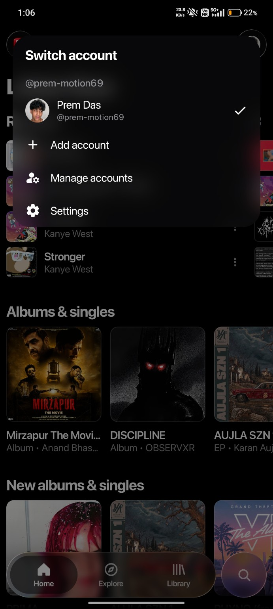

Attempts that didn’t make it.
Twelve attempts didn’t become the app Prem had in mind. Prem kept going. The thirteenth became Podium.
A little more freedom to listen.
Stream, save, and bring your local library together. Your music, wherever the day takes you.

On the way to school.
On the long ride home.
With the screen off.
Still your music.
Your listening home, your account, your playback preferences. Take a look inside the actual Android app.
Listen Now brings recent tracks, albums and quick picks together.
Real screenshots supplied by Prem. Account and update dialogs are shown as captured.
Save tracks so your music is ready even when your connection isn’t. Downloads live alongside your online discoveries.
Crossfade, lyrics, a sleep timer, and playback controls let you shape your listening experience.
Bring music stored on your phone into the same place as the tracks you discover online.
Small beginning. Growing sound.
APK downloads
522 APK release-asset downloads. Last verified 12 October 2026.Verify on GitHubCounts are APK release-asset downloads, including repeat downloads, rather than unique listeners or installations. Refreshed on page load; shared results may be cached for up to 2 minutes.
Twelve attempts didn’t become the app Prem had in mind. Prem kept going. The thirteenth became Podium.
Podium made room for the music already on your phone. Prem wanted Podium users to listen online too.
After roughly three weeks of building, Podium Air arrived. Prem coded it. Then Podium Air dropped.
Podium for the songs already yours. Podium Air for the music waiting to be discovered.
Android 8.0+ Stable v1.0.1
Download the APK and open it. If Android asks, allow installation from your browser, then confirm Install. Installing this signed update over an existing Podium Air app retains its data.